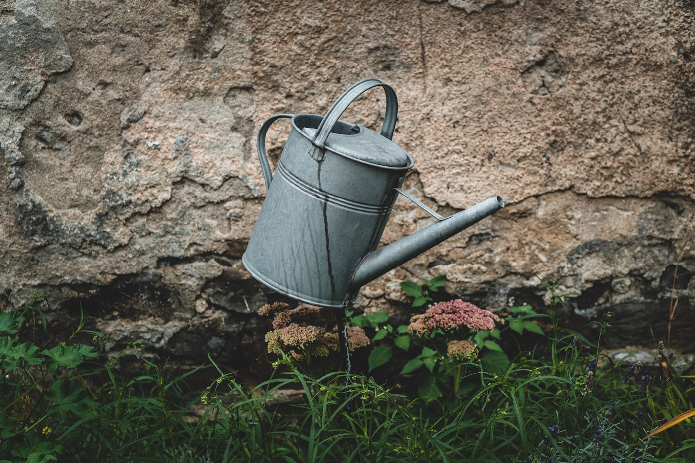

On compost tea
The fortnight rule, the half-and-half dilution, and the beds that respond first. A quiet case for patience.
Compost tea is the liquid the digester draws from its base — the runoff of finished compost, rich with the microbes that make soil work. Drawn from the brass tap, it is the most immediate return the bin offers: usable within minutes, where the solid compost takes weeks. The trays at the top are the slow harvest; the tap is the fast one, and most owners come to value it more.
It is worth being precise about what the tea is and is not. It is not fertiliser in the bagged, measured sense — there is no guaranteed analysis on the side of a digester. What it carries instead is biology: the bacteria, fungi, and protozoa that finished compost teems with, suspended in water and ready to colonise the soil they reach. The minerals matter, but the life matters more. A spoonful of good tea seeds a pot with the same microbial community the bin runs on.

Two rules keep it honest
The first is the fortnight rule — draw the tea at least every two weeks, whether or not the garden needs it, so it does not turn anaerobic in the basin. Tea left standing loses its oxygen, and with it the aerobic microbes that make it worth pouring; what remains can go sour and sulphurous. Drawing it on a schedule keeps the basin fresh and, conveniently, keeps the tap from clogging. If the garden cannot use a full draw, the lawn or a houseplant can. The point is movement.
The second is the half-and-half dilution — one part tea to one part water, no stronger, poured at the root rather than the leaf. Undiluted tea is not dangerous so much as wasteful; the soil can only hold so much at once, and the rest drains past the roots. The mark inside the watering can reads half-and-half for this reason. Pour it at the base, where the roots are, not over the foliage, where it mostly evaporates.

The beds respond in order. Leafy things first — chard, lettuce, the herbs on the sill — then the fruiting plants as they set. This is not a rule so much as an observation, repeated across enough seasons to trust: the fast-growing greens show the tea within a week, a deepening of colour and a thickening of leaf, while tomatoes and peppers take their time and pay it back at harvest. Feed the whole garden, but watch the greens to learn what the tea is doing.
A quiet case for patience: the tea works on the soil, and the soil works on the plant. Neither is in a hurry, and neither should be rushed. A bin drawn faithfully every fortnight, poured at strength and at the root, will do more for a garden over a season than any single dramatic feeding. The reward is cumulative, like most things worth keeping.
— From the bench, OmniCompost